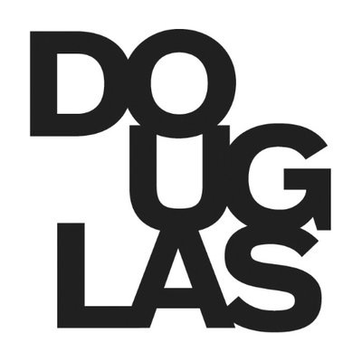
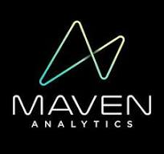
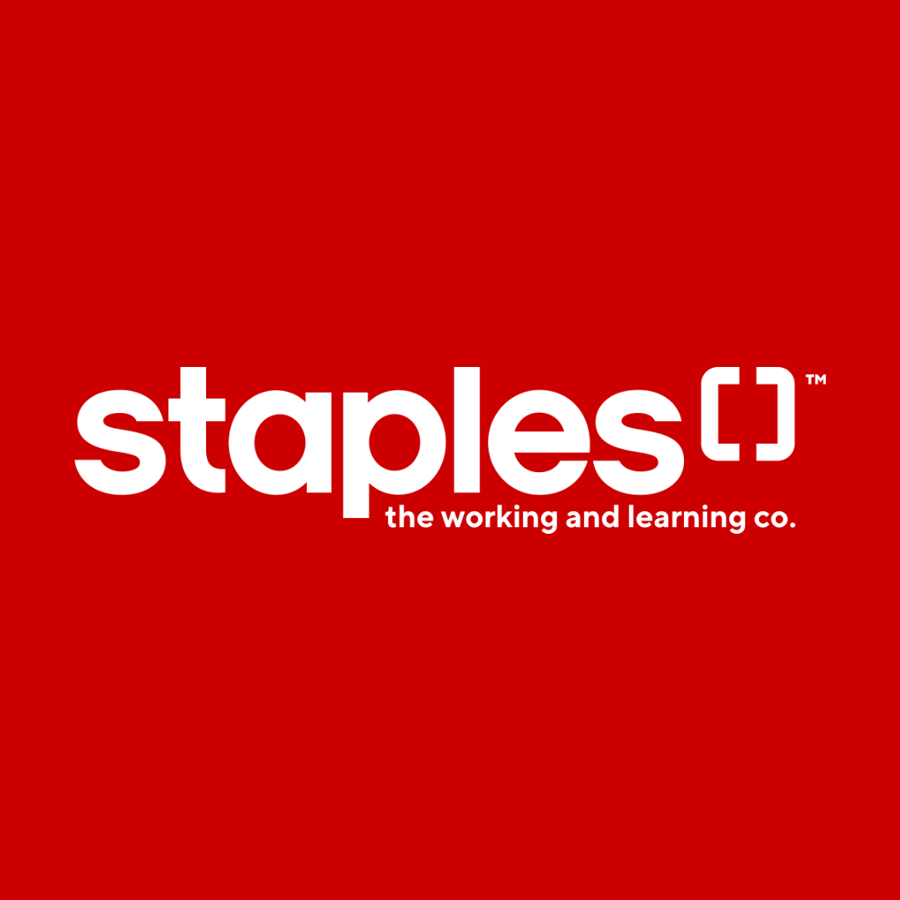

Kunal Ajaykumar Jeshang
Software Developer & Data Analyst
To the underestimated, the overlooked, and the outcast. Trust your power.
—
Colin Kaepernick
About Me
I build tools where data meets the user.
I work at the intersection of data and frontend development—turning complex, messy data into clear, usable interfaces. With a Bachelor of Business Administration in Actuarial Science and a Post–Baccalaureate Diploma in Computing & Information Systems — Data Analytics, I am uniquely equipped to handle problems that are data and numbers-heavy. From ETL pipelines and automated reporting in Python to responsive dashboards & web applications in Angular, I focus on making information easier to understand and act on.
I am comfortable working across the full development cycle, from breaking down requirements to supporting Quality Assurance and refining the final product. My background in IT support shaped how I approach problems: practical, systematic, and focused on fixing root causes—not just symptoms.
I enjoy building things that are genuinely useful—tools that save time, reduce friction, and help people make better decisions.
Experience
Below is a list of noteworthy career highlights. To view my full work history, please visit my LinkedIn!
- Developed data-intensive frontend modules for SaaS platforms, enabling analysis & reporting of financial datasets.
- Reduced operational costs by migrating company website from Wix to a custom web-based solution.
- Designed reusable recursive Angular components for hierarchical data (e.g., threaded structures).
- Performed quality assurance testing and produced documentation, converting issues into actionable Agile/Scrum stories.
- Tech Stack: Angular, TypeScript, Tailwind CSS, NgRx Signal Store, Angular Material, Syncfusion, Lodash, Plotly, Luxon

- Led 15-person team in operational environment, coordinating workflows, training staff, and resolving issues.
- Developed web application to automate end-of-day cash deposits, increasing operational efficiency.
- Boosted sales conversion in customer interactions using machine learning driven coffee recommendation guides.
- Reduced training time by 75% using machine learning driven summarization of training documents.
- Led Nespresso Metrotown branch to achieve its highest-ever TQM audit score (92%), demonstrating effective leadership.
- Tech Stack: Excel, SharePoint, HTML, Bootstrap, JavaScript, Render, Python (Pandas, Numpy, NLTK, Transformers)

- Automated data workflows using ETL & web scraping scripts, reducing manual data processing effort to a few minutes.
- Centralized datasets in Google Sheets ensuring data accuracy and structured reporting for leadership review.
- Developed a web-based dashboard to analyze engagement trends and support decision-making insights.
- Tech Stack: Python (Pandas, Gspread, Selenium, Plotly, Dash, Flask), Heroku, Facebook Graph API, Google Sheets API

- Supported 25+ end-users daily, troubleshooting software and hardware issues across multiple channels.
- Automated monthly Excel reporting, converting manual processes into a structured reporting workflow.
- Developed employee tracking system to support IT department operations and cross-team coordination.
- Created PowerApps + Power Automate solutions to automate data management workflows in SharePoint.
- Deployed a Microsoft Teams chatbot to provide instantaneous resolution for common technical issues.
- Tech Stack: Microsoft Power Platform, SharePoint, HTML, PHP, Bootstrap, JavaScript, MySQL, Python (Pandas, Numpy)
- Developed Excel VBA macros to slash completion time of financial tasks (e.g., premium calculations, debtor analysis).
- Completed bank reconciliations for brokerage & commercial bank accounts, including supporting documentation.
- Processed daily debtor receipts and premium transactions, ensuring accurate financial recordkeeping.
- Maintained bank registers (local and foreign currency) and organized journal vouchers for audit preparation.
Projects

Maven Analytics Data Projects Web Application
This is an updated version of my Maven Analytics Data Projects website. It acts as frontend/portfolio to showcase the various projects completed so far in the Maven Analytics Data Playground Project. It is a multi-component single page application created with the help of the Angular framework, and packages such as Angular Material, SignalStore, and Lodash.

Nespresso Suite
This is a web application that is designed as a Software as a Service to assist with day-to-day operational tasks conducted by Nestle Nespresso management. This project was created with the help of the Angular framework, and packages such as SignalStore, Lodash, Plotly, and CurrencyJS.
French Learning Blog Web Application
This is an updated version of my french learning blog. The application retrieves the actual blog posts from a separate GitHub Repository that serves as a static-external backend. This project was created with the help of the Angular framework, and packages such as SignalStore, Lodash, Plotly, Luxon, and Ngx-Markdown.
Portfolio Web Application
This is an updated version of my current portfolio website (i.e., the website you see before you). It is a multi-component single page application created with the help of the Angular framework, and packages such as Angular Material, SignalStore, Lodash, Plotly, and Luxon.
Legacy French Learning Blog Website
A web application that acts as a frontend to track my french language learning journey. The frontend retrieves the actual blog posts from a separate GitHub Repository that serves as a static-external backend, and then displays it.
Maven Analytics Data Projects Website (Legacy)
A web application that acts as a frontend/portfolio to showcase the various projects completed so far in the Maven Analytics Data Playground Project.
Maven Analytics Data Playground Project
A growing collection of completed projects regarding free datasets provided by Maven Analytics that involve data cleaning, analysis, and visualization.
Nespresso Metropolis Training Matrix Summarization
A project that extracts text from an expansive Quality, Health & Safety, and Sustainability Employee Memo, and then summarizes & evaluates the text using Machine Learning techniques.
Nespresso Metropolis Cash Journal Reconciliation
A web application designed to assist managers to quickly perform opening & closing cash journal reconciliations for both credit/debit and cash transactions.
Nespresso Metropolis Coffee Flavour Reference Guide
Programmatically generated reference guides that were designed to help sales floor employees convey high level knowledge to customers with speed & detail.

Staples Marine Way Associate Companion Mobile App
An application designed to assist associates to better understand product lineup, as well as to serve as a referential tool to help connect, share, and partner with customers to meet their requirements.
Nespresso Metropolis Customer Review Analysis
An exploratory sentiment analysis of customer Google Reviews, received between 2019 to 2022, to assess service quality & customer perception to help management pinpoint areas for improvement.
Legacy Portfolio Website
The current portfolio website, which utilizes basic web development fundamentals such as HTML, CSS, and Javascript.
Nespresso Metropolis Training App
A Machine Learning & Natural Language Processing Application designed to both educate about coffee flavour profiles and make recommendations.
Zyp Art Gallery Social Media Dashboard Application
A free and accessible web application designed to serve as a custom dashboard tool to help visualize Facebook & Instagram data and derive social media insights.
Zyp Art Gallery Volunteer Connector Web Scraping
A custom web scraper designed to retreive volunteer interest data per month, and both open and completed volunteer application data on a lifetime basis from the Volunteer Connector portal.

CEIT SHS 2021 Statistics Exploratory Data Analysis
An exploratory data analysis of the Students Helping Students 2021 statistics data pertaining to educational technology issues of Douglas College students.
Zyp Art Gallery Social Media Data Extraction
A collection of scripts that can programmatically extract, transform, and load unaggregated Facebook & Instagram data to both CSV and Google Sheets files using Facebook Graph API and Google Sheets API.
Cultural Spaces in Vancouver Dashboard
A Tableau dashboard showing the locations of Cultural Places in Vancouver along with visualizations that differentiate locations based on both comparison and size parameters.